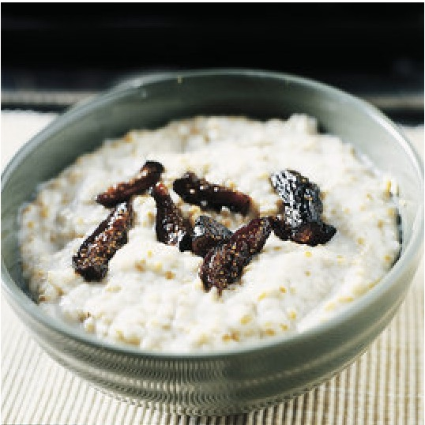

HOW TO MAKE PERFECT OATMEAL
My daughter @sophster calls this “special oatmeal” and it is one of her favorite foods. It is creamy, oaty, and has a silky texture.
-
Melt a couple tablespoons of butter in a pot on medium heat.
-
Add a cup of steel cut oats to the butter.
I assume this recipe won't work well with rolled oats but I've never tried.
-
Toast the oats in the butter for a few minutes.
They will start to smell a little toasty or butterscotchy. Don't burn them but give them some time.
-
Add three cups of water and one cup of whole milk.
Whole milk isn't strictly necessary but it is better. Skim milk and some half and half or cream to fatten it up would also work.
-
Bring to a simmer and adjust heat so it simmers slowly.
-
Cover and simmer for 15 minutes.
Stir occasionally and go until it is somewhat thickened (i.e., no longer oats in water).
-
Add a pinch of salt and stir uncovered until it gets to the right consistency.
It will thicken a lot as it cools so you want it looser than the finished product but basically it's you're choice here about how stiff you want them. I usually go about five minutes and it is spoonable.
-
Serve! Let it cool just a minute in the bowl before you dig in.
-
At our house we like it with brown sugar, cinnamon, nuts, and milk. Or fried apples and nuts. But it is great with any toppings you like.
-

I have no idea where this picture came from but it's in my recipe app next to this recipe (which we put in ourselves) and it is pretty much what it looks like.
Except prettier than I could do myself.